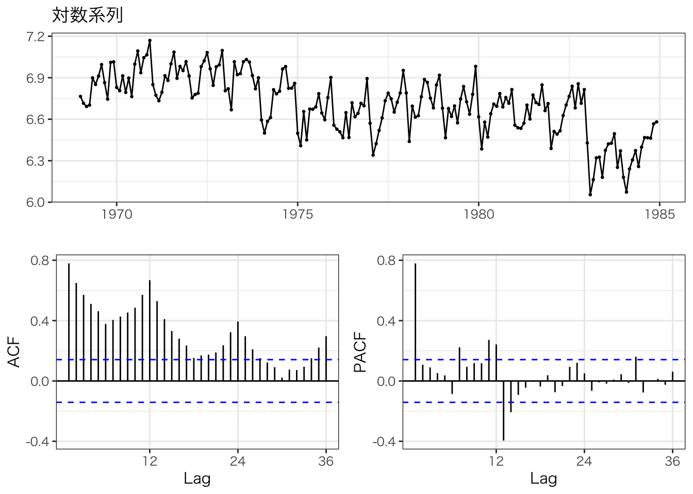
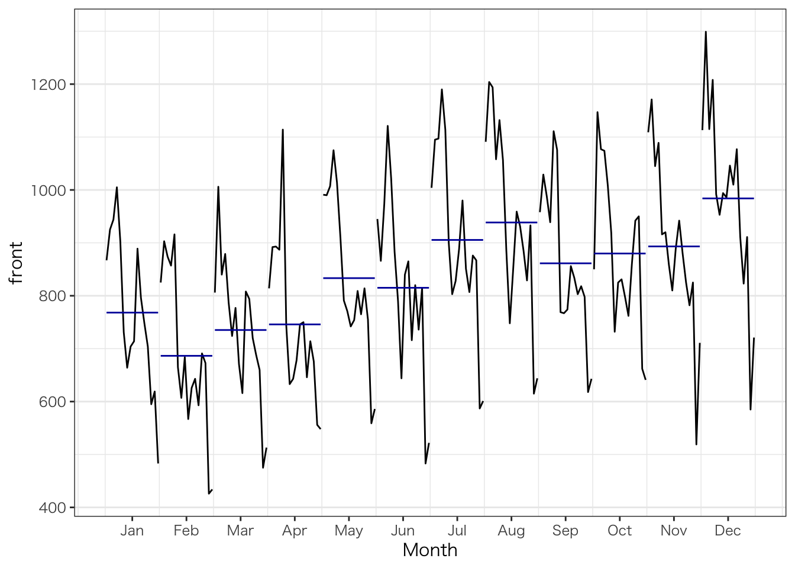
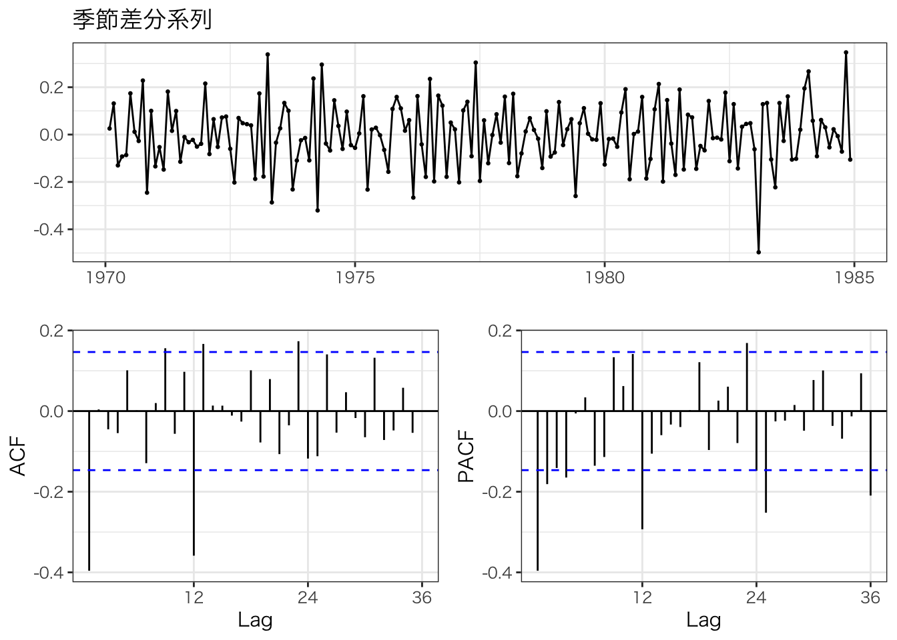

7章 RによるARIMAモデル
library(forecast)## Registered S3 method overwritten by 'quantmod':
## method from
## as.zoo.data.frame zoolibrary(tseries)
library(ggplot2)
library(ggfortify)## Registered S3 methods overwritten by 'ggfortify':
## method from
## autoplot.Arima forecast
## autoplot.acf forecast
## autoplot.ar forecast
## autoplot.bats forecast
## autoplot.decomposed.ts forecast
## autoplot.ets forecast
## autoplot.forecast forecast
## autoplot.stl forecast
## autoplot.ts forecast
## fitted.ar forecast
## fortify.ts forecast
## residuals.ar forecasttheme_set(theme_bw(base_family = "HiraKakuProN-W3"))0.0.0.1 7-2.分析の対象
Seatsbeltsを使用
- front：前席における死傷者数
- PetrolPrice：ガソリンの値段
- law：前席においてシートベルトの義務付け法案の有無。1983年1月31日に施行。
front <- Seatbelts[, "front"]このデータに関しては、モデルが複雑になる。
- 季節成分が必須。毎年12月頃に死傷者数が増加している。
- ガソリンの値段が高いと車にあまり乗らなくなり、交通事故死傷者数が減ると考えられる。
- シートベルト法案も交通事故死傷者数を減らす効果がある。
以上より、季節成分＋外生変数の入ったARIMAモデル、「SARIMAX」を使う。
0.0.0.2 対数変換
- 個数や人数といったデータは対数変換してからモデル化するとうまくモデル化できる傾向がある。
# 対数系列
log_front <- log(front)
# 図示
ggtsdisplay(log_front, main = "対数系列")
0.0.0.3 7-4.差分系列の作成方法
# 原系列
front## Jan Feb Mar Apr May Jun Jul Aug Sep Oct Nov Dec
## 1969 867 825 806 814 991 945 1004 1091 958 850 1109 1113
## 1970 925 903 1006 892 990 866 1095 1204 1029 1147 1171 1299
## 1971 944 874 840 893 1007 973 1097 1194 988 1077 1045 1115
## 1972 1005 857 879 887 1075 1121 1190 1058 939 1074 1089 1208
## 1973 903 916 787 1114 1014 1022 1114 1132 1111 1008 916 992
## 1974 731 665 724 744 910 883 900 1057 1076 919 920 953
## 1975 664 607 777 633 791 790 803 884 769 732 859 994
## 1976 704 684 671 643 771 644 828 748 767 825 810 986
## 1977 714 567 616 678 742 840 888 852 774 831 889 1046
## 1978 889 626 808 746 754 865 980 959 856 798 942 1010
## 1979 796 643 794 750 809 716 851 931 834 762 880 1077
## 1980 748 593 720 646 765 820 807 885 803 860 825 911
## 1981 704 691 688 714 814 736 876 829 818 942 782 823
## 1982 595 673 660 676 755 815 867 933 798 950 825 911
## 1983 619 426 475 556 559 483 587 615 618 662 519 585
## 1984 483 434 513 548 586 522 601 644 643 641 711 721# ラグをとる
lag(front, -1)## Jan Feb Mar Apr May Jun Jul Aug Sep Oct Nov Dec
## 1969 867 825 806 814 991 945 1004 1091 958 850 1109
## 1970 1113 925 903 1006 892 990 866 1095 1204 1029 1147 1171
## 1971 1299 944 874 840 893 1007 973 1097 1194 988 1077 1045
## 1972 1115 1005 857 879 887 1075 1121 1190 1058 939 1074 1089
## 1973 1208 903 916 787 1114 1014 1022 1114 1132 1111 1008 916
## 1974 992 731 665 724 744 910 883 900 1057 1076 919 920
## 1975 953 664 607 777 633 791 790 803 884 769 732 859
## 1976 994 704 684 671 643 771 644 828 748 767 825 810
## 1977 986 714 567 616 678 742 840 888 852 774 831 889
## 1978 1046 889 626 808 746 754 865 980 959 856 798 942
## 1979 1010 796 643 794 750 809 716 851 931 834 762 880
## 1980 1077 748 593 720 646 765 820 807 885 803 860 825
## 1981 911 704 691 688 714 814 736 876 829 818 942 782
## 1982 823 595 673 660 676 755 815 867 933 798 950 825
## 1983 911 619 426 475 556 559 483 587 615 618 662 519
## 1984 585 483 434 513 548 586 522 601 644 643 641 711
## 1985 721# ラグをとったデータを原系列から引くことで差分系列が手に入る
front - lag(front, -1)## Jan Feb Mar Apr May Jun Jul Aug Sep Oct Nov Dec
## 1969 -42 -19 8 177 -46 59 87 -133 -108 259 4
## 1970 -188 -22 103 -114 98 -124 229 109 -175 118 24 128
## 1971 -355 -70 -34 53 114 -34 124 97 -206 89 -32 70
## 1972 -110 -148 22 8 188 46 69 -132 -119 135 15 119
## 1973 -305 13 -129 327 -100 8 92 18 -21 -103 -92 76
## 1974 -261 -66 59 20 166 -27 17 157 19 -157 1 33
## 1975 -289 -57 170 -144 158 -1 13 81 -115 -37 127 135
## 1976 -290 -20 -13 -28 128 -127 184 -80 19 58 -15 176
## 1977 -272 -147 49 62 64 98 48 -36 -78 57 58 157
## 1978 -157 -263 182 -62 8 111 115 -21 -103 -58 144 68
## 1979 -214 -153 151 -44 59 -93 135 80 -97 -72 118 197
## 1980 -329 -155 127 -74 119 55 -13 78 -82 57 -35 86
## 1981 -207 -13 -3 26 100 -78 140 -47 -11 124 -160 41
## 1982 -228 78 -13 16 79 60 52 66 -135 152 -125 86
## 1983 -292 -193 49 81 3 -76 104 28 3 44 -143 66
## 1984 -102 -49 79 35 38 -64 79 43 -1 -2 70 10# diffで行うことも可能
diff(front, lag = 1)## Jan Feb Mar Apr May Jun Jul Aug Sep Oct Nov Dec
## 1969 -42 -19 8 177 -46 59 87 -133 -108 259 4
## 1970 -188 -22 103 -114 98 -124 229 109 -175 118 24 128
## 1971 -355 -70 -34 53 114 -34 124 97 -206 89 -32 70
## 1972 -110 -148 22 8 188 46 69 -132 -119 135 15 119
## 1973 -305 13 -129 327 -100 8 92 18 -21 -103 -92 76
## 1974 -261 -66 59 20 166 -27 17 157 19 -157 1 33
## 1975 -289 -57 170 -144 158 -1 13 81 -115 -37 127 135
## 1976 -290 -20 -13 -28 128 -127 184 -80 19 58 -15 176
## 1977 -272 -147 49 62 64 98 48 -36 -78 57 58 157
## 1978 -157 -263 182 -62 8 111 115 -21 -103 -58 144 68
## 1979 -214 -153 151 -44 59 -93 135 80 -97 -72 118 197
## 1980 -329 -155 127 -74 119 55 -13 78 -82 57 -35 86
## 1981 -207 -13 -3 26 100 -78 140 -47 -11 124 -160 41
## 1982 -228 78 -13 16 79 60 52 66 -135 152 -125 86
## 1983 -292 -193 49 81 3 -76 104 28 3 44 -143 66
## 1984 -102 -49 79 35 38 -64 79 43 -1 -2 70 10# 対数差分系列
log_diff <- diff(log_front)
# 図示
ggtsdisplay(log_diff, main = "対数差分系列")
0.0.0.4 7-5.季節成分の取り扱い
# 月ごとに分けたグラフを図示
ggsubseriesplot(front)
# 季節差分を取得
frequency(front)## [1] 12diff(front, lag = frequency(front))## Jan Feb Mar Apr May Jun Jul Aug Sep Oct Nov Dec
## 1970 58 78 200 78 -1 -79 91 113 71 297 62 186
## 1971 19 -29 -166 1 17 107 2 -10 -41 -70 -126 -184
## 1972 61 -17 39 -6 68 148 93 -136 -49 -3 44 93
## 1973 -102 59 -92 227 -61 -99 -76 74 172 -66 -173 -216
## 1974 -172 -251 -63 -370 -104 -139 -214 -75 -35 -89 4 -39
## 1975 -67 -58 53 -111 -119 -93 -97 -173 -307 -187 -61 41
## 1976 40 77 -106 10 -20 -146 25 -136 -2 93 -49 -8
## 1977 10 -117 -55 35 -29 196 60 104 7 6 79 60
## 1978 175 59 192 68 12 25 92 107 82 -33 53 -36
## 1979 -93 17 -14 4 55 -149 -129 -28 -22 -36 -62 67
## 1980 -48 -50 -74 -104 -44 104 -44 -46 -31 98 -55 -166
## 1981 -44 98 -32 68 49 -84 69 -56 15 82 -43 -88
## 1982 -109 -18 -28 -38 -59 79 -9 104 -20 8 43 88
## 1983 24 -247 -185 -120 -196 -332 -280 -318 -180 -288 -306 -326
## 1984 -136 8 38 -8 27 39 14 29 25 -21 192 136# 対数差分系列にさらに季節差分をとる
season_log_diff <- diff(log_diff, lag = frequency(log_diff))
# 図示
ggtsdisplay(season_log_diff, main = "季節差分系列")
0.0.0.5 7-6.自己相関とコレログラム
# 自己相関を数値で得る
acf(season_log_diff, plot = F, lag.max = 12)##
## Autocorrelations of series 'season_log_diff', by lag
##
## 0.0000 0.0833 0.1667 0.2500 0.3333 0.4167 0.5000 0.5833 0.6667 0.7500 0.8333
## 1.000 -0.396 0.004 -0.045 -0.055 0.101 0.002 -0.129 0.020 0.156 -0.056
## 0.9167 1.0000
## 0.097 -0.3590.0.0.6 7-7.訓練データとテストデータに分ける
- あらかじめ対数変換はしておく
- 差分系列は、ARIMAが勝手に差分をとってくれるため、行わない。
# データを抽出
Seatbelts_log <- Seatbelts[, c("front", "PetrolPrice", "law")]
# front,PetrolPrice列を対数変換
Seatbelts_log[,"front"] <- log(Seatbelts[, "front"])
Seatbelts_log[, "PetrolPrice"] <- log(Seatbelts[, "PetrolPrice"])
# 訓練とテストデータに分ける
train <- window(Seatbelts_log, end = c(1983, 12))
test <- window(Seatbelts_log, start = c(1984, 1))
# frontは今回の応答変数（目的変数）であるため、それ以外を説明変数として確保
petrol_law <- train[, c("PetrolPrice", "law")]0.0.0.7 7-8.ARIMAモデルの推定
- forecastのArima関数を用いて、SARIMAXを構築。
- \(y\)：応答関数
- \(order\)：\(SARIMA(p,d,q)(P,D,Q)\)における\((p,d,q)\)
- \(seasonal\)：季節成分の次数\((P,D,Q)\)
- \(xreg\)：説明変数の指定
model_sarimax <- Arima(
y = train[, "front"],
order = c(1,1,1),
seasonal = list(order = c(1,0,0)),
xreg = petrol_law
)
# 結果の表示
model_sarimax## Series: train[, "front"]
## Regression with ARIMA(1,1,1)(1,0,0)[12] errors
##
## Coefficients:
## ar1 ma1 sar1 PetrolPrice law
## 0.2589 -0.9503 0.6877 -0.3464 -0.3719
## s.e. 0.0826 0.0303 0.0548 0.0955 0.0467
##
## sigma^2 = 0.009052: log likelihood = 165.33
## AIC=-318.66 AICc=-318.18 BIC=-299.540.0.0.8 7-9.補足：差分系列とARIMAの次数の関係
Arima(
y = log_diff, order = c(1,0,0),
include.mean = F # 定数項を入れない指定
)## Series: log_diff
## ARIMA(1,0,0) with zero mean
##
## Coefficients:
## ar1
## -0.2058
## s.e. 0.0706
##
## sigma^2 = 0.0202: log likelihood = 102.1
## AIC=-200.21 AICc=-200.15 BIC=-193.7# 上記と全く同じ
Arima(
y = log_front, order = c(1,1,0)
)## Series: log_front
## ARIMA(1,1,0)
##
## Coefficients:
## ar1
## -0.2058
## s.e. 0.0706
##
## sigma^2 = 0.0202: log likelihood = 102.1
## AIC=-200.21 AICc=-200.15 BIC=-193.7# SARIMAと季節差分の関係
Arima(
y = season_log_diff, order = c(1,0,0),
include.mean = F
)## Series: season_log_diff
## ARIMA(1,0,0) with zero mean
##
## Coefficients:
## ar1
## -0.3951
## s.e. 0.0685
##
## sigma^2 = 0.01569: log likelihood = 118.26
## AIC=-232.52 AICc=-232.45 BIC=-226.15# 上記と全く同じ
Arima(
y = log_front, order = c(1,1,0),
seasonal = list(order = c(0,1,0))
)## Series: log_front
## ARIMA(1,1,0)(0,1,0)[12]
##
## Coefficients:
## ar1
## -0.3951
## s.e. 0.0685
##
## sigma^2 = 0.0157: log likelihood = 118.26
## AIC=-232.52 AICc=-232.45 BIC=-226.150.0.0.9 7-10.自動モデル選択\(auto.arima関数\)
- forecastにあるauto.arima関数を用いて、自動でモデルを選択する。
sarimax_petrol_law <- auto.arima(
y = train[, "front"],
xreg = petrol_law,
ic = "aic", # aicc,bic等が選択肢としてある。
max.order = 7, # SARIMA(p,d,q)(P,D,Q)におけるp+q+P+Q -> 大きいほど、複雑化可能
stepwise = F, # Tだと次数の組み合わせが減少
approximation = F, # Tだと毎回の計算において近似的な手法を用いて、計算速度を向上させる -> 誤った結果が出る傾向
parallel = F, # 並列化計算の有無
trace = T,
num.cores = 4 # ４コアで並列処理が行える
)##
## Regression with ARIMA(0,0,0)(0,1,0)[12] errors : -274.7001
## Regression with ARIMA(0,0,0)(0,1,0)[12] errors : -274.4551
## Regression with ARIMA(0,0,0)(0,1,1)[12] errors : -287.5499
## Regression with ARIMA(0,0,0)(0,1,1)[12] errors : -292.7638
## Regression with ARIMA(0,0,0)(0,1,2)[12] errors : -285.6368
## Regression with ARIMA(0,0,0)(0,1,2)[12] errors : Inf
## Regression with ARIMA(0,0,0)(1,1,0)[12] errors : -285.5793
## Regression with ARIMA(0,0,0)(1,1,0)[12] errors : -287.6387
## Regression with ARIMA(0,0,0)(1,1,1)[12] errors : -285.6541
## Regression with ARIMA(0,0,0)(1,1,1)[12] errors : Inf
## Regression with ARIMA(0,0,0)(1,1,2)[12] errors : Inf
## Regression with ARIMA(0,0,0)(1,1,2)[12] errors : Inf
## Regression with ARIMA(0,0,0)(2,1,0)[12] errors : -285.6047
## Regression with ARIMA(0,0,0)(2,1,0)[12] errors : -289.4336
## Regression with ARIMA(0,0,0)(2,1,1)[12] errors : Inf
## Regression with ARIMA(0,0,0)(2,1,1)[12] errors : Inf
## Regression with ARIMA(0,0,0)(2,1,2)[12] errors : Inf
## Regression with ARIMA(0,0,0)(2,1,2)[12] errors : Inf
## Regression with ARIMA(0,0,1)(0,1,0)[12] errors : -280.7257
## Regression with ARIMA(0,0,1)(0,1,0)[12] errors : -279.9823
## Regression with ARIMA(0,0,1)(0,1,1)[12] errors : -298.2952
## Regression with ARIMA(0,0,1)(0,1,1)[12] errors : -303.4982
## Regression with ARIMA(0,0,1)(0,1,2)[12] errors : -297.1005
## Regression with ARIMA(0,0,1)(0,1,2)[12] errors : Inf
## Regression with ARIMA(0,0,1)(1,1,0)[12] errors : -293.7526
## Regression with ARIMA(0,0,1)(1,1,0)[12] errors : -294.7371
## Regression with ARIMA(0,0,1)(1,1,1)[12] errors : -297.3245
## Regression with ARIMA(0,0,1)(1,1,1)[12] errors : Inf
## Regression with ARIMA(0,0,1)(1,1,2)[12] errors : -296.0707
## Regression with ARIMA(0,0,1)(1,1,2)[12] errors : Inf
## Regression with ARIMA(0,0,1)(2,1,0)[12] errors : -295.7934
## Regression with ARIMA(0,0,1)(2,1,0)[12] errors : -298.464
## Regression with ARIMA(0,0,1)(2,1,1)[12] errors : -295.9753
## Regression with ARIMA(0,0,1)(2,1,1)[12] errors : Inf
## Regression with ARIMA(0,0,1)(2,1,2)[12] errors : Inf
## Regression with ARIMA(0,0,1)(2,1,2)[12] errors : Inf
## Regression with ARIMA(0,0,2)(0,1,0)[12] errors : -284.7712
## Regression with ARIMA(0,0,2)(0,1,0)[12] errors : -283.5954
## Regression with ARIMA(0,0,2)(0,1,1)[12] errors : -304.3198
## Regression with ARIMA(0,0,2)(0,1,1)[12] errors : -308.8363
## Regression with ARIMA(0,0,2)(0,1,2)[12] errors : -305.1389
## Regression with ARIMA(0,0,2)(0,1,2)[12] errors : Inf
## Regression with ARIMA(0,0,2)(1,1,0)[12] errors : -297.2168
## Regression with ARIMA(0,0,2)(1,1,0)[12] errors : -297.3513
## Regression with ARIMA(0,0,2)(1,1,1)[12] errors : -305.3417
## Regression with ARIMA(0,0,2)(1,1,1)[12] errors : Inf
## Regression with ARIMA(0,0,2)(1,1,2)[12] errors : -303.4637
## Regression with ARIMA(0,0,2)(1,1,2)[12] errors : Inf
## Regression with ARIMA(0,0,2)(2,1,0)[12] errors : -301.6701
## Regression with ARIMA(0,0,2)(2,1,0)[12] errors : -303.2011
## Regression with ARIMA(0,0,2)(2,1,1)[12] errors : -303.3635
## Regression with ARIMA(0,0,2)(2,1,1)[12] errors : Inf
## Regression with ARIMA(0,0,2)(2,1,2)[12] errors : -302.166
## Regression with ARIMA(0,0,2)(2,1,2)[12] errors : Inf
## Regression with ARIMA(0,0,3)(0,1,0)[12] errors : -282.8132
## Regression with ARIMA(0,0,3)(0,1,0)[12] errors : -281.6153
## Regression with ARIMA(0,0,3)(0,1,1)[12] errors : -304.2209
## Regression with ARIMA(0,0,3)(0,1,1)[12] errors : -309.0753
## Regression with ARIMA(0,0,3)(0,1,2)[12] errors : -305.023
## Regression with ARIMA(0,0,3)(0,1,2)[12] errors : Inf
## Regression with ARIMA(0,0,3)(1,1,0)[12] errors : -296.0468
## Regression with ARIMA(0,0,3)(1,1,0)[12] errors : -296.0158
## Regression with ARIMA(0,0,3)(1,1,1)[12] errors : -305.2038
## Regression with ARIMA(0,0,3)(1,1,1)[12] errors : Inf
## Regression with ARIMA(0,0,3)(1,1,2)[12] errors : -303.1929
## Regression with ARIMA(0,0,3)(1,1,2)[12] errors : Inf
## Regression with ARIMA(0,0,3)(2,1,0)[12] errors : -301.0555
## Regression with ARIMA(0,0,3)(2,1,0)[12] errors : -302.3065
## Regression with ARIMA(0,0,3)(2,1,1)[12] errors : -303.2222
## Regression with ARIMA(0,0,3)(2,1,1)[12] errors : Inf
## Regression with ARIMA(0,0,3)(2,1,2)[12] errors : -301.8976
## Regression with ARIMA(0,0,3)(2,1,2)[12] errors : Inf
## Regression with ARIMA(0,0,4)(0,1,0)[12] errors : -281.3754
## Regression with ARIMA(0,0,4)(0,1,0)[12] errors : -280.2747
## Regression with ARIMA(0,0,4)(0,1,1)[12] errors : -302.311
## Regression with ARIMA(0,0,4)(0,1,1)[12] errors : -307.23
## Regression with ARIMA(0,0,4)(0,1,2)[12] errors : -303.0906
## Regression with ARIMA(0,0,4)(0,1,2)[12] errors : Inf
## Regression with ARIMA(0,0,4)(1,1,0)[12] errors : -294.0773
## Regression with ARIMA(0,0,4)(1,1,0)[12] errors : -294.0923
## Regression with ARIMA(0,0,4)(1,1,1)[12] errors : -303.25
## Regression with ARIMA(0,0,4)(1,1,1)[12] errors : Inf
## Regression with ARIMA(0,0,4)(1,1,2)[12] errors : -301.3191
## Regression with ARIMA(0,0,4)(1,1,2)[12] errors : Inf
## Regression with ARIMA(0,0,4)(2,1,0)[12] errors : -299.0925
## Regression with ARIMA(0,0,4)(2,1,0)[12] errors : -300.3143
## Regression with ARIMA(0,0,4)(2,1,1)[12] errors : -301.2659
## Regression with ARIMA(0,0,4)(2,1,1)[12] errors : Inf
## Regression with ARIMA(0,0,5)(0,1,0)[12] errors : -282.0649
## Regression with ARIMA(0,0,5)(0,1,0)[12] errors : -280.7642
## Regression with ARIMA(0,0,5)(0,1,1)[12] errors : -304.0468
## Regression with ARIMA(0,0,5)(0,1,1)[12] errors : -307.9847
## Regression with ARIMA(0,0,5)(0,1,2)[12] errors : -304.9782
## Regression with ARIMA(0,0,5)(0,1,2)[12] errors : Inf
## Regression with ARIMA(0,0,5)(1,1,0)[12] errors : -295.8371
## Regression with ARIMA(0,0,5)(1,1,0)[12] errors : -295.4772
## Regression with ARIMA(0,0,5)(1,1,1)[12] errors : -305.4784
## Regression with ARIMA(0,0,5)(1,1,1)[12] errors : Inf
## Regression with ARIMA(0,0,5)(2,1,0)[12] errors : -299.9882
## Regression with ARIMA(0,0,5)(2,1,0)[12] errors : -300.6967
## Regression with ARIMA(1,0,0)(0,1,0)[12] errors : -283.2929
## Regression with ARIMA(1,0,0)(0,1,0)[12] errors : -282.2825
## Regression with ARIMA(1,0,0)(0,1,1)[12] errors : -304.3892
## Regression with ARIMA(1,0,0)(0,1,1)[12] errors : -309.6275
## Regression with ARIMA(1,0,0)(0,1,2)[12] errors : -304.6489
## Regression with ARIMA(1,0,0)(0,1,2)[12] errors : Inf
## Regression with ARIMA(1,0,0)(1,1,0)[12] errors : -297.1335
## Regression with ARIMA(1,0,0)(1,1,0)[12] errors : -297.4689
## Regression with ARIMA(1,0,0)(1,1,1)[12] errors : -304.9317
## Regression with ARIMA(1,0,0)(1,1,1)[12] errors : Inf
## Regression with ARIMA(1,0,0)(1,1,2)[12] errors : -302.9435
## Regression with ARIMA(1,0,0)(1,1,2)[12] errors : Inf
## Regression with ARIMA(1,0,0)(2,1,0)[12] errors : -301.0618
## Regression with ARIMA(1,0,0)(2,1,0)[12] errors : -302.7094
## Regression with ARIMA(1,0,0)(2,1,1)[12] errors : -303.025
## Regression with ARIMA(1,0,0)(2,1,1)[12] errors : Inf
## Regression with ARIMA(1,0,0)(2,1,2)[12] errors : Inf
## Regression with ARIMA(1,0,0)(2,1,2)[12] errors : Inf
## Regression with ARIMA(1,0,1)(0,1,0)[12] errors : -283.8364
## Regression with ARIMA(1,0,1)(0,1,0)[12] errors : -282.4592
## Regression with ARIMA(1,0,1)(0,1,1)[12] errors : -321.9807
## Regression with ARIMA(1,0,1)(0,1,1)[12] errors : -321.6022
## Regression with ARIMA(1,0,1)(0,1,2)[12] errors : Inf
## Regression with ARIMA(1,0,1)(0,1,2)[12] errors : Inf
## Regression with ARIMA(1,0,1)(1,1,0)[12] errors : -300.6766
## Regression with ARIMA(1,0,1)(1,1,0)[12] errors : -299.4396
## Regression with ARIMA(1,0,1)(1,1,1)[12] errors : Inf
## Regression with ARIMA(1,0,1)(1,1,1)[12] errors : Inf
## Regression with ARIMA(1,0,1)(1,1,2)[12] errors : Inf
## Regression with ARIMA(1,0,1)(1,1,2)[12] errors : Inf
## Regression with ARIMA(1,0,1)(2,1,0)[12] errors : -309.7484
## Regression with ARIMA(1,0,1)(2,1,0)[12] errors : -308.2677
## Regression with ARIMA(1,0,1)(2,1,1)[12] errors : Inf
## Regression with ARIMA(1,0,1)(2,1,1)[12] errors : Inf
## Regression with ARIMA(1,0,1)(2,1,2)[12] errors : Inf
## Regression with ARIMA(1,0,1)(2,1,2)[12] errors : Inf
## Regression with ARIMA(1,0,2)(0,1,0)[12] errors : -282.8016
## Regression with ARIMA(1,0,2)(0,1,0)[12] errors : -281.609
## Regression with ARIMA(1,0,2)(0,1,1)[12] errors : -322.0552
## Regression with ARIMA(1,0,2)(0,1,1)[12] errors : -321.6106
## Regression with ARIMA(1,0,2)(0,1,2)[12] errors : Inf
## Regression with ARIMA(1,0,2)(0,1,2)[12] errors : Inf
## Regression with ARIMA(1,0,2)(1,1,0)[12] errors : -300.2767
## Regression with ARIMA(1,0,2)(1,1,0)[12] errors : -298.533
## Regression with ARIMA(1,0,2)(1,1,1)[12] errors : Inf
## Regression with ARIMA(1,0,2)(1,1,1)[12] errors : Inf
## Regression with ARIMA(1,0,2)(1,1,2)[12] errors : Inf
## Regression with ARIMA(1,0,2)(1,1,2)[12] errors : Inf
## Regression with ARIMA(1,0,2)(2,1,0)[12] errors : -309.2211
## Regression with ARIMA(1,0,2)(2,1,0)[12] errors : -307.5479
## Regression with ARIMA(1,0,2)(2,1,1)[12] errors : Inf
## Regression with ARIMA(1,0,2)(2,1,1)[12] errors : Inf
## Regression with ARIMA(1,0,2)(2,1,2)[12] errors : Inf
## Regression with ARIMA(1,0,2)(2,1,2)[12] errors : Inf
## Regression with ARIMA(1,0,3)(0,1,0)[12] errors : -281.9177
## Regression with ARIMA(1,0,3)(0,1,0)[12] errors : -280.1781
## Regression with ARIMA(1,0,3)(0,1,1)[12] errors : -320.5113
## Regression with ARIMA(1,0,3)(0,1,1)[12] errors : -320.0132
## Regression with ARIMA(1,0,3)(0,1,2)[12] errors : Inf
## Regression with ARIMA(1,0,3)(0,1,2)[12] errors : Inf
## Regression with ARIMA(1,0,3)(1,1,0)[12] errors : -299.1998
## Regression with ARIMA(1,0,3)(1,1,0)[12] errors : -297.4394
## Regression with ARIMA(1,0,3)(1,1,1)[12] errors : Inf
## Regression with ARIMA(1,0,3)(1,1,1)[12] errors : Inf
## Regression with ARIMA(1,0,3)(1,1,2)[12] errors : Inf
## Regression with ARIMA(1,0,3)(1,1,2)[12] errors : Inf
## Regression with ARIMA(1,0,3)(2,1,0)[12] errors : -308.2876
## Regression with ARIMA(1,0,3)(2,1,0)[12] errors : -306.5959
## Regression with ARIMA(1,0,3)(2,1,1)[12] errors : Inf
## Regression with ARIMA(1,0,3)(2,1,1)[12] errors : Inf
## Regression with ARIMA(1,0,4)(0,1,0)[12] errors : Inf
## Regression with ARIMA(1,0,4)(0,1,0)[12] errors : Inf
## Regression with ARIMA(1,0,4)(0,1,1)[12] errors : -318.552
## Regression with ARIMA(1,0,4)(0,1,1)[12] errors : -318.0321
## Regression with ARIMA(1,0,4)(0,1,2)[12] errors : Inf
## Regression with ARIMA(1,0,4)(0,1,2)[12] errors : Inf
## Regression with ARIMA(1,0,4)(1,1,0)[12] errors : -297.2022
## Regression with ARIMA(1,0,4)(1,1,0)[12] errors : -295.4431
## Regression with ARIMA(1,0,4)(1,1,1)[12] errors : Inf
## Regression with ARIMA(1,0,4)(1,1,1)[12] errors : Inf
## Regression with ARIMA(1,0,4)(2,1,0)[12] errors : -306.294
## Regression with ARIMA(1,0,4)(2,1,0)[12] errors : -304.6002
## Regression with ARIMA(1,0,5)(0,1,0)[12] errors : -281.5119
## Regression with ARIMA(1,0,5)(0,1,0)[12] errors : -279.9382
## Regression with ARIMA(1,0,5)(0,1,1)[12] errors : -318.5972
## Regression with ARIMA(1,0,5)(0,1,1)[12] errors : -317.9703
## Regression with ARIMA(1,0,5)(1,1,0)[12] errors : -295.9476
## Regression with ARIMA(1,0,5)(1,1,0)[12] errors : -295.0083
## Regression with ARIMA(2,0,0)(0,1,0)[12] errors : -284.3959
## Regression with ARIMA(2,0,0)(0,1,0)[12] errors : -283.0868
## Regression with ARIMA(2,0,0)(0,1,1)[12] errors : -309.2287
## Regression with ARIMA(2,0,0)(0,1,1)[12] errors : -313.7624
## Regression with ARIMA(2,0,0)(0,1,2)[12] errors : -311.136
## Regression with ARIMA(2,0,0)(0,1,2)[12] errors : Inf
## Regression with ARIMA(2,0,0)(1,1,0)[12] errors : -298.7796
## Regression with ARIMA(2,0,0)(1,1,0)[12] errors : -298.45
## Regression with ARIMA(2,0,0)(1,1,1)[12] errors : -311.1668
## Regression with ARIMA(2,0,0)(1,1,1)[12] errors : Inf
## Regression with ARIMA(2,0,0)(1,1,2)[12] errors : -309.152
## Regression with ARIMA(2,0,0)(1,1,2)[12] errors : Inf
## Regression with ARIMA(2,0,0)(2,1,0)[12] errors : -304.9341
## Regression with ARIMA(2,0,0)(2,1,0)[12] errors : -305.513
## Regression with ARIMA(2,0,0)(2,1,1)[12] errors : -309.1774
## Regression with ARIMA(2,0,0)(2,1,1)[12] errors : Inf
## Regression with ARIMA(2,0,0)(2,1,2)[12] errors : -307.9364
## Regression with ARIMA(2,0,0)(2,1,2)[12] errors : Inf
## Regression with ARIMA(2,0,1)(0,1,0)[12] errors : -282.4648
## Regression with ARIMA(2,0,1)(0,1,0)[12] errors : -281.1822
## Regression with ARIMA(2,0,1)(0,1,1)[12] errors : -322.2315
## Regression with ARIMA(2,0,1)(0,1,1)[12] errors : -321.7772
## Regression with ARIMA(2,0,1)(0,1,2)[12] errors : Inf
## Regression with ARIMA(2,0,1)(0,1,2)[12] errors : Inf
## Regression with ARIMA(2,0,1)(1,1,0)[12] errors : -300.5639
## Regression with ARIMA(2,0,1)(1,1,0)[12] errors : -298.808
## Regression with ARIMA(2,0,1)(1,1,1)[12] errors : Inf
## Regression with ARIMA(2,0,1)(1,1,1)[12] errors : Inf
## Regression with ARIMA(2,0,1)(1,1,2)[12] errors : Inf
## Regression with ARIMA(2,0,1)(1,1,2)[12] errors : Inf
## Regression with ARIMA(2,0,1)(2,1,0)[12] errors : -309.4791
## Regression with ARIMA(2,0,1)(2,1,0)[12] errors : -307.7934
## Regression with ARIMA(2,0,1)(2,1,1)[12] errors : Inf
## Regression with ARIMA(2,0,1)(2,1,1)[12] errors : Inf
## ARIMA(2,0,1)(2,1,2)[12] : Inf
## ARIMA(2,0,1)(2,1,2)[12] with drift : Inf
## Regression with ARIMA(2,0,2)(0,1,0)[12] errors : -280.411
## Regression with ARIMA(2,0,2)(0,1,0)[12] errors : -278.6884
## Regression with ARIMA(2,0,2)(0,1,1)[12] errors : -320.2816
## Regression with ARIMA(2,0,2)(0,1,1)[12] errors : -319.8249
## Regression with ARIMA(2,0,2)(0,1,2)[12] errors : Inf
## Regression with ARIMA(2,0,2)(0,1,2)[12] errors : Inf
## Regression with ARIMA(2,0,2)(1,1,0)[12] errors : -298.844
## Regression with ARIMA(2,0,2)(1,1,0)[12] errors : -297.0922
## Regression with ARIMA(2,0,2)(1,1,1)[12] errors : Inf
## Regression with ARIMA(2,0,2)(1,1,1)[12] errors : Inf
## Regression with ARIMA(2,0,2)(1,1,2)[12] errors : Inf
## Regression with ARIMA(2,0,2)(1,1,2)[12] errors : Inf
## Regression with ARIMA(2,0,2)(2,1,0)[12] errors : Inf
## Regression with ARIMA(2,0,2)(2,1,0)[12] errors : -306.0688
## Regression with ARIMA(2,0,2)(2,1,1)[12] errors : Inf
## Regression with ARIMA(2,0,2)(2,1,1)[12] errors : Inf
## Regression with ARIMA(2,0,3)(0,1,0)[12] errors : -279.9361
## Regression with ARIMA(2,0,3)(0,1,0)[12] errors : -278.1932
## Regression with ARIMA(2,0,3)(0,1,1)[12] errors : -318.7329
## Regression with ARIMA(2,0,3)(0,1,1)[12] errors : -318.3079
## Regression with ARIMA(2,0,3)(0,1,2)[12] errors : Inf
## Regression with ARIMA(2,0,3)(0,1,2)[12] errors : Inf
## Regression with ARIMA(2,0,3)(1,1,0)[12] errors : -297.2007
## Regression with ARIMA(2,0,3)(1,1,0)[12] errors : -295.4407
## Regression with ARIMA(2,0,3)(1,1,1)[12] errors : Inf
## Regression with ARIMA(2,0,3)(1,1,1)[12] errors : Inf
## Regression with ARIMA(2,0,3)(2,1,0)[12] errors : Inf
## ARIMA(2,0,3)(2,1,0)[12] with drift : Inf
## Regression with ARIMA(2,0,4)(0,1,0)[12] errors : Inf
## Regression with ARIMA(2,0,4)(0,1,0)[12] errors : Inf
## Regression with ARIMA(2,0,4)(0,1,1)[12] errors : -316.8331
## Regression with ARIMA(2,0,4)(0,1,1)[12] errors : -316.3795
## Regression with ARIMA(2,0,4)(1,1,0)[12] errors : Inf
## Regression with ARIMA(2,0,4)(1,1,0)[12] errors : Inf
## Regression with ARIMA(2,0,5)(0,1,0)[12] errors : Inf
## Regression with ARIMA(2,0,5)(0,1,0)[12] errors : Inf
## Regression with ARIMA(3,0,0)(0,1,0)[12] errors : -282.4819
## Regression with ARIMA(3,0,0)(0,1,0)[12] errors : -281.2188
## Regression with ARIMA(3,0,0)(0,1,1)[12] errors : -308.6855
## Regression with ARIMA(3,0,0)(0,1,1)[12] errors : -313.1936
## Regression with ARIMA(3,0,0)(0,1,2)[12] errors : -310.411
## Regression with ARIMA(3,0,0)(0,1,2)[12] errors : Inf
## Regression with ARIMA(3,0,0)(1,1,0)[12] errors : -297.1253
## Regression with ARIMA(3,0,0)(1,1,0)[12] errors : -296.6699
## Regression with ARIMA(3,0,0)(1,1,1)[12] errors : -310.5055
## Regression with ARIMA(3,0,0)(1,1,1)[12] errors : Inf
## Regression with ARIMA(3,0,0)(1,1,2)[12] errors : -308.3198
## Regression with ARIMA(3,0,0)(1,1,2)[12] errors : Inf
## Regression with ARIMA(3,0,0)(2,1,0)[12] errors : -303.5256
## Regression with ARIMA(3,0,0)(2,1,0)[12] errors : -303.8819
## Regression with ARIMA(3,0,0)(2,1,1)[12] errors : -308.5065
## Regression with ARIMA(3,0,0)(2,1,1)[12] errors : Inf
## Regression with ARIMA(3,0,0)(2,1,2)[12] errors : -307.1389
## Regression with ARIMA(3,0,0)(2,1,2)[12] errors : Inf
## Regression with ARIMA(3,0,1)(0,1,0)[12] errors : -280.4819
## Regression with ARIMA(3,0,1)(0,1,0)[12] errors : -279.2194
## Regression with ARIMA(3,0,1)(0,1,1)[12] errors : -320.3304
## Regression with ARIMA(3,0,1)(0,1,1)[12] errors : -319.8662
## Regression with ARIMA(3,0,1)(0,1,2)[12] errors : Inf
## Regression with ARIMA(3,0,1)(0,1,2)[12] errors : Inf
## Regression with ARIMA(3,0,1)(1,1,0)[12] errors : -295.1509
## Regression with ARIMA(3,0,1)(1,1,0)[12] errors : Inf
## Regression with ARIMA(3,0,1)(1,1,1)[12] errors : Inf
## Regression with ARIMA(3,0,1)(1,1,1)[12] errors : Inf
## Regression with ARIMA(3,0,1)(1,1,2)[12] errors : Inf
## Regression with ARIMA(3,0,1)(1,1,2)[12] errors : Inf
## Regression with ARIMA(3,0,1)(2,1,0)[12] errors : -308.003
## Regression with ARIMA(3,0,1)(2,1,0)[12] errors : -306.3222
## ARIMA(3,0,1)(2,1,1)[12] : Inf
## ARIMA(3,0,1)(2,1,1)[12] with drift : Inf
## Regression with ARIMA(3,0,2)(0,1,0)[12] errors : -285.0349
## Regression with ARIMA(3,0,2)(0,1,0)[12] errors : Inf
## Regression with ARIMA(3,0,2)(0,1,1)[12] errors : -318.8076
## Regression with ARIMA(3,0,2)(0,1,1)[12] errors : -318.3689
## Regression with ARIMA(3,0,2)(0,1,2)[12] errors : Inf
## Regression with ARIMA(3,0,2)(0,1,2)[12] errors : Inf
## Regression with ARIMA(3,0,2)(1,1,0)[12] errors : Inf
## Regression with ARIMA(3,0,2)(1,1,0)[12] errors : Inf
## Regression with ARIMA(3,0,2)(1,1,1)[12] errors : Inf
## Regression with ARIMA(3,0,2)(1,1,1)[12] errors : Inf
## Regression with ARIMA(3,0,2)(2,1,0)[12] errors : -306.096
## Regression with ARIMA(3,0,2)(2,1,0)[12] errors : -304.4092
## Regression with ARIMA(3,0,3)(0,1,0)[12] errors : -284.1017
## Regression with ARIMA(3,0,3)(0,1,0)[12] errors : -282.6323
## Regression with ARIMA(3,0,3)(0,1,1)[12] errors : Inf
## Regression with ARIMA(3,0,3)(0,1,1)[12] errors : Inf
## Regression with ARIMA(3,0,3)(1,1,0)[12] errors : Inf
## Regression with ARIMA(3,0,3)(1,1,0)[12] errors : Inf
## Regression with ARIMA(3,0,4)(0,1,0)[12] errors : -282.5964
## Regression with ARIMA(3,0,4)(0,1,0)[12] errors : -280.9184
## Regression with ARIMA(4,0,0)(0,1,0)[12] errors : -280.482
## Regression with ARIMA(4,0,0)(0,1,0)[12] errors : -279.225
## Regression with ARIMA(4,0,0)(0,1,1)[12] errors : -308.0925
## Regression with ARIMA(4,0,0)(0,1,1)[12] errors : -312.0566
## Regression with ARIMA(4,0,0)(0,1,2)[12] errors : -310.3985
## Regression with ARIMA(4,0,0)(0,1,2)[12] errors : Inf
## Regression with ARIMA(4,0,0)(1,1,0)[12] errors : -295.2391
## Regression with ARIMA(4,0,0)(1,1,0)[12] errors : -294.7077
## Regression with ARIMA(4,0,0)(1,1,1)[12] errors : -310.362
## Regression with ARIMA(4,0,0)(1,1,1)[12] errors : Inf
## Regression with ARIMA(4,0,0)(1,1,2)[12] errors : -308.48
## Regression with ARIMA(4,0,0)(1,1,2)[12] errors : Inf
## Regression with ARIMA(4,0,0)(2,1,0)[12] errors : -302.1026
## Regression with ARIMA(4,0,0)(2,1,0)[12] errors : -302.2082
## Regression with ARIMA(4,0,0)(2,1,1)[12] errors : -308.3953
## Regression with ARIMA(4,0,0)(2,1,1)[12] errors : Inf
## Regression with ARIMA(4,0,1)(0,1,0)[12] errors : Inf
## Regression with ARIMA(4,0,1)(0,1,0)[12] errors : Inf
## Regression with ARIMA(4,0,1)(0,1,1)[12] errors : -318.7692
## Regression with ARIMA(4,0,1)(0,1,1)[12] errors : -318.2096
## Regression with ARIMA(4,0,1)(0,1,2)[12] errors : Inf
## Regression with ARIMA(4,0,1)(0,1,2)[12] errors : Inf
## Regression with ARIMA(4,0,1)(1,1,0)[12] errors : -297.1129
## Regression with ARIMA(4,0,1)(1,1,0)[12] errors : -295.35
## Regression with ARIMA(4,0,1)(1,1,1)[12] errors : Inf
## Regression with ARIMA(4,0,1)(1,1,1)[12] errors : Inf
## Regression with ARIMA(4,0,1)(2,1,0)[12] errors : -306.2721
## Regression with ARIMA(4,0,1)(2,1,0)[12] errors : -304.5709
## Regression with ARIMA(4,0,2)(0,1,0)[12] errors : -283.4531
## Regression with ARIMA(4,0,2)(0,1,0)[12] errors : -282.2202
## Regression with ARIMA(4,0,2)(0,1,1)[12] errors : -321.2447
## Regression with ARIMA(4,0,2)(0,1,1)[12] errors : Inf
## Regression with ARIMA(4,0,2)(1,1,0)[12] errors : Inf
## Regression with ARIMA(4,0,2)(1,1,0)[12] errors : Inf
## Regression with ARIMA(4,0,3)(0,1,0)[12] errors : -282.6645
## Regression with ARIMA(4,0,3)(0,1,0)[12] errors : Inf
## Regression with ARIMA(5,0,0)(0,1,0)[12] errors : -280.9615
## Regression with ARIMA(5,0,0)(0,1,0)[12] errors : -279.472
## Regression with ARIMA(5,0,0)(0,1,1)[12] errors : -310.9286
## Regression with ARIMA(5,0,0)(0,1,1)[12] errors : -313.3556
## Regression with ARIMA(5,0,0)(0,1,2)[12] errors : -314.4853
## Regression with ARIMA(5,0,0)(0,1,2)[12] errors : Inf
## Regression with ARIMA(5,0,0)(1,1,0)[12] errors : -296.2704
## Regression with ARIMA(5,0,0)(1,1,0)[12] errors : -295.2866
## Regression with ARIMA(5,0,0)(1,1,1)[12] errors : -314.4873
## Regression with ARIMA(5,0,0)(1,1,1)[12] errors : Inf
## Regression with ARIMA(5,0,0)(2,1,0)[12] errors : -303.0349
## Regression with ARIMA(5,0,0)(2,1,0)[12] errors : -302.52
## Regression with ARIMA(5,0,1)(0,1,0)[12] errors : -278.9777
## Regression with ARIMA(5,0,1)(0,1,0)[12] errors : -277.4783
## Regression with ARIMA(5,0,1)(0,1,1)[12] errors : -317.5647
## Regression with ARIMA(5,0,1)(0,1,1)[12] errors : -317.0097
## Regression with ARIMA(5,0,1)(1,1,0)[12] errors : -295.6198
## Regression with ARIMA(5,0,1)(1,1,0)[12] errors : -293.5063
## Regression with ARIMA(5,0,2)(0,1,0)[12] errors : Inf
## Regression with ARIMA(5,0,2)(0,1,0)[12] errors : Inf
##
##
##
## Best model: Regression with ARIMA(2,0,1)(0,1,1)[12] errorssarimax_petrol_law## Series: train[, "front"]
## Regression with ARIMA(2,0,1)(0,1,1)[12] errors
##
## Coefficients:
## ar1 ar2 ma1 sma1 PetrolPrice law
## 1.1225 -0.1322 -0.8690 -0.8183 -0.3748 -0.3431
## s.e. 0.0906 0.0876 0.0443 0.1129 0.1000 0.0473
##
## sigma^2 = 0.007624: log likelihood = 168.12
## AIC=-322.23 AICc=-321.53 BIC=-300.36